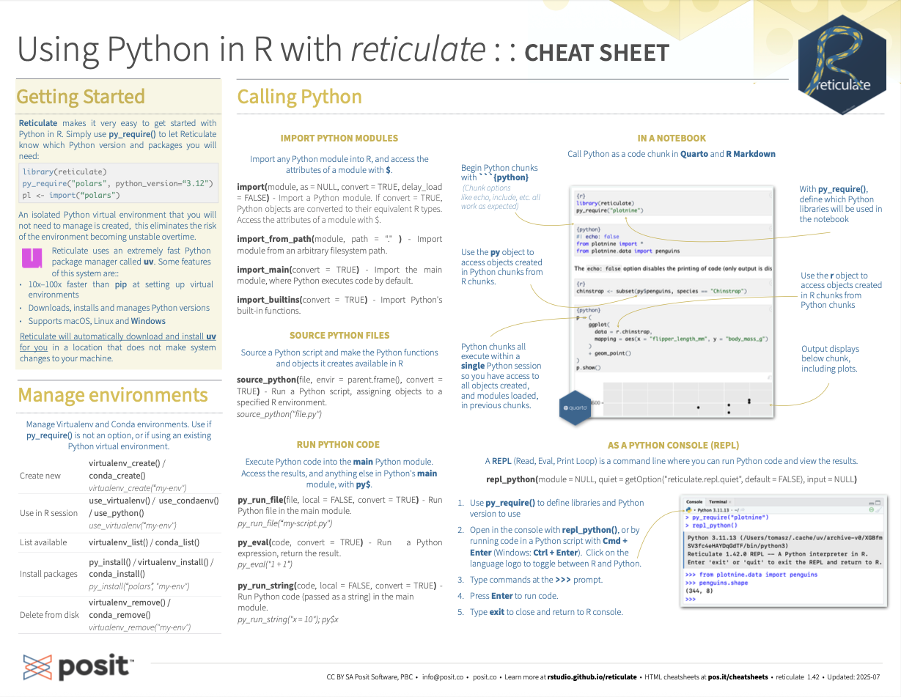

Download PDF
Translations (PDF)
The reticulate package lets you use Python and R together seamlessly in R code, in R Markdown documents, and in the RStudio IDE.
library(reticulate)(Optional) Build Python env to use.
Add knitr::knit_engires$set(python = reticulate::eng_python) to the setup chunk to set up the reticulate Python engine (not required for knitr >= 1.18).
```{{r}}
#| label: setup
#| include: false
library(reticulate)
virtualenv_create("fmri-proj")
py_install("seaborn", envname = "fmri-proj")
use_virtualenv("fmri-proj")`
```Begin Python chunks with ```{python}. Chunk options like echo, include, etc. all work as expected.
```{{python}}
#| echo: false
import seaborn as sns
fmri = sns.load_dataset("fmri")`
```Use the py object the access objects created in Python chunks from R chunks.
``` {{r}}
f1 <- subset(py$fmri, region = "parietal")
```Python chunks all execute within a single Python session so you have access to all objects created in previous chunks.
Use the r object to access objects created in R chunks from Python chunks.
``` {{python}}
import matplotlib as mpl
sns.lmplot("timepoint", "signal", data=r.f1)
mpl.pyplot.show()
```python.r Example:
library(reticulate)
py_install("seaborn")
use_virtualenv("r-reticulate")
sns <- import("seaborn")
fmri <- sns$load_dataset("fmri")
dim(fmri)
# creates tips
source_python("python.py")
dim(tips)
# creates tips in main
py_run_file("python.py")
dim(py$tips)
py_run_string("print(tips.shape)")python.py Example:
import seaborn as sns
tips = sns.load_dataset("tips")Call Python from R code in three ways:
Use import() to import any Python module. Access the attributes of a module with $.
library(reticulate)
py_install("seaborn")
use_virtualenv("r-reticulate")
sns <- import("seaborn")
tips <- sns$load_dataset("tips")
dim(tips)import(module, as = NULL, convert = TRUE, delay_load = FALSE): Import a Python module. If convert = TRUE, Python objects are converted to their equivalent R types. Also import_from_path().
import("pandas")import_main(convert = TRUE): Import the main module, where Python executes code by default.
import_main()import_builtings(convert = TRUE): Import Python’s built-in functions.
import_builtins()Use source_python() to source a Python script and make the Python functions and objects it creates available in the calling R environment.
source_python("python.py")
dim(py$tips)source_python(file, envir = parent.frame(), convert = TRUE): Run a Python script, assigning objects to a specified R environment.
source_python("python.py")Execute Python code into the main Python modules with py_run_file() or py_run_string().
py_run_file("python.py")
dim(py$tips)
py_run_string("print(tips.shape)")py_run_string(code, local = FALSE, convert = TRUE): Run Python code (passed as a string) in the main module.
py_run_string("x = 10")
py$xpy_run_file(file, local = FALSE, convert = TRUE): Run Python file in the main module.
py_run_file("python.py")py_eval(code, convert = TRUE): Run a Python expression, return the result. Also py_call().
py_eval("1 + 1")Access the results, and anything else in Python’s main module, with py.
py: An R object that contains the Python main module and the results stored there.
py$xTip: To index Python objects begin at 0, use integers, e.g. OL
Reticulate provides automatic built-in conversion between Python and R for many Python types.
| R | Python |
|---|---|
| Single-element vector | Scalar |
| Multi-element vector | List |
| List of multiple types | Tuple |
| Named List | Dict |
| Matrix/Array | NumPy ndarray |
| Data Frame | Pandas DataFrame |
| Function | Python function |
| NULL, TRUE, FALSE | None, True, False |
Or, if you like, you can convert manually with
py_to_r(x): Convert a Python object to an R object. Also r_to_py().
py_to_r(py)tuple(..., convert = FALSE): Create a Python tuple.
tuple("a", "b", "c")dict(..., convert = FALSE): Create a Python dictionary object. Also py_dict() to make a dictionary that uses Python objects as keys.
dict(foo = "bar", index = 42L)np_array(data, dtype = NULL, order = "C"): Create NumPy arrays.
np_array(c(1:8), dtype = "float16")array_reshape(x, dim, order = c("C", "F")): Reshape a Python array.
x <- 1:4
array_reshape(x, c(2,2))py_func(f): Wrap an R function in a Python function with the same signature.
py_func(xor)py_main_thread_func(f): Create a function that will always be called on the main thread.
iterate(it, f = base::identity, simplify = TRUE): Apply an R function to each value of a Python iterator or return the values as an R vector, draining the iterator as you go. Also iter_next() and as_iterator().
iterate(iter, print)py_interator(fn, completed = NULL): Create a Python iterator from an R function.
seq_gen <- function(x) {
n <- x;
function() {
n <<- n + 1;
n
}
}
py_iterator(seq_gen(9))py_capture_output(expr, type = c("stdout", "stderr")): Capture and return Python output. Also py_supress_warnings().
py_capture_output("x")py_get_attr(x, name, silent = FALSE): Get an attribute of a Python object. Also py_set_attr(), py_has_attr(), and py_list_attributes().
py_get_attr(x)py_help(object): Open the documentation page for a Python object.
py_help(sns)py_last_error(): Get the last Python error encountered. Also py_clear_last_error() to clear the last error.
py_last_error()py_save_object(object, filename, pickle = "pickle", ...): Save and load Python objects with pickle. Also py_load_object().
py_save_objects(x, "x.pickle")with(data, expr, as = NULL, ...): Evaluate an expression within a Python context manager.
py <- import_builtins()
with(py$open("output.txt", "w") %as% file,
{file$write("Hello, there!")})Requires reticulate plus RStudio v1.2+. Some features require v1.4+.

RStudio IDE Window:
A REPL (Read, Eval, Print Loop) is a command line where you can run Python code and view the results.
Open in the console with repl_python(), or by running code in a Python script with Cmd + Enter (Ctrl + Enter).
repl_python(module = NULL, quiet = getOption("reticulate.repl.quiet", default = FALSE), input = NULL): Launch a Python REPL. Run exit to close.
repl_python()Type commands at >>> prompt.
Press Enter to run code.
Type exit to close and return to R console.
> reticulate::repl_python()
Python 3.9.16 (/Users/mine/.virtualenvs/r-reticulate/bin/python)
Reticulate 1.28 REPL -- A Python interpreter in R.
Enter 'exit' or 'quit' to exit the REPL and return to R.
>>> import seaborn as sns
>>> tips = sns.load_dataset("tips")
>>> tips.shape
(244, 7)
>>> exit
>Reticulate binds to a local instance of Python when you first call import() directly or implicitly from an R session. To control the process, find or build your desired Python instance. Then suggest your instance to reticulate. Restart R to unbind.
install_python(version, list = FALSE, force = FALSE): Download and install Python.
install_python("3.9.16")py_available(initialize = FALSE): Check if Python is available on your system. Also py_module_available() and py_numpy_module().
py_available()py_discover_config(): Return all detected versions of Python. Use py_config() to check which version has been loaded.
py_config()virtualenv_list(): List all available virtual environments. Also virtualenv_root().
virtualenv_list()conda_list(conda = "auto"): List all available conda envs. Also conda_binary() and conda_version().
conda_list()virtual_env(envname = NULL, ...): Create a new virtual environment.
virtualenv_create("r-pandas")conda_create(envname = NULL, ...): Create a new conda environment.
conda_create("r-pandas", packages = "pandas")Install Python packages with R (below) or the shell:
pip install SciPy
conda install SciPy
py_install(packages, envname, ...): Install Python packages into a Python env.
py_install("pandas")virtualenv_install(envname, packages, ...): Install a package within a virtual environment. Also virtualenv_remove().
virtualenv_install("r-pandas", packages = "pandas")conda_installs(envname, packages, ...): Install a package within a conda environment. Also conda_remove().
conda_install("r-pandas", packages = "plotly")Set a default Python interpreter in the RStudio IDE Global or Project Options. Go to Tools > Global Options … > Python for Global Options. Within a project, go to Tools > Project Options… > Python.
Otherwise, to choose an instance of Python to bind to, reticulate scans the instances on your computer in the following order, stopping at the first instance that contains the module called by import().
The instance referenced by the environment variable RETICULATE_PYTHON (if specified). Tip: set in .Renviron file.
Sys.setenv(RETICULATE_PYTHON = PATH): Set default Python binary. Persists across sessions! Undo with Sys.unsetenv().
Sys.setenv(RETICULATE_PYTHON = "/usr/local/bin/python")The instances referenced by use_ functions if called before import(). Will fail silently if called after impoty unless required = TRUE.
use_python(python, required = FALSE): Suggest a Python binary to use by path.
use_python("usr/local/bin/python")use_virtualenv(virtualenv = NULL, required = FALSE): Suggest a Python virtualenv
use_virtualenv("~/myenv")use_condaenv(condaenv = NULL, conda = "auto", required = FALSE): Suggest a conda env to use.
use_condaenv(condaenv = "r-nlp", conda = "/opt/anaconda3/bin/conda")Within virtualenvs and conda envs that carry the same name as the imported module. e.g. ~/anaconda/envs/nltk for import("nltk")
At the location of the Python binary discovered on the system PATH (i.e. Sys.which("python"))
At customary locations for Python, e.g. /usr/local/bin/python, /opt/local/bin/python…
CC BY SA Posit Software, PBC • info@posit.co • posit.co
Learn more at rstudio.github.io/reticulate.
Updated: 2023-06.
packageVersion("reticulate")[1] '1.28'